Продолжаем изучать основы алгебры. В данном уроке мы научимся раскрывать скобки в выражениях. Раскрыть скобки означает избавить выражение от этих скобок.
Чтобы раскрывать скобки, нужно выучить наизусть два правила. При регулярных занятиях раскрывать скобки можно с закрытыми глазами, и про те правила которые требовалось заучивать наизусть, можно благополучно забыть.
Содержание урока- Первое правило раскрытия скобок
- Второе правило раскрытия скобок
- Механизм раскрытия скобок
- Задания для самостоятельного решения
Первое правило раскрытия скобок
Рассмотрим следующее выражение:
\[8 + (-9 + 3)\]
Значение данного выражения равно 2. Раскроем скобки в данном выражении. Раскрыть скобки означает избавиться от них, не влияя на значение выражения. То есть после избавления от скобок значение выражения 8 + (−9 + 3) по прежнему должно быть равно двум.
Первое правило раскрытия скобок выглядит следующим образом:
При раскрытии скобок, если перед скобками стоит плюс, то этот плюс опускается вместе со скобками.
Итак, мы видим что в выражении 8 + (−9 + 3) перед скобками стоит плюс. Этот плюс нужно опустить вместе со скобками. Иными словами, скобки исчезнут вместе с плюсом, который перед ними стоял. А то, что было в скобках запишется без изменений:
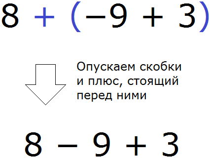
Мы получили выражение без скобок 8−9+3. Данное выражение равно 2, как и предыдущее выражение со скобками было равно 2.
\[8 + (-9 + 3) = 2\]
\[8 - 9 + 3 = 2\]
Таким образом, между выражениями 8+(−9+3) и 8−9+3 можно поставить знак равенства, поскольку они равны одному и тому же значению:
\[8 + (-9 + 3) = 8 - 9 + 3\]
\[2 = 2\]
Пример 2. Раскрыть скобки в выражении 3 + (−1 − 4)
Перед скобками стоит плюс, значит этот плюс опускается вместе со скобками. То, что было в скобках останется без изменений:
\[3 + (-1 - 4) = 3 - 1 - 4\]
Пример 3. Раскрыть скобки в выражении 2 + (−1)
Перед скобками стоит плюс, значит этот плюс опускается вместе со скобками. То, что было в скобках останется без изменений:
\[2 + (-1) = 2 - 1\]
В данном примере раскрытие скобок стало своего рода обратной операцией замене вычитания сложением. Как это понимать?
В выражении 2 − 1 происходит вычитание, но его можно заменить сложением. Тогда получится выражение 2 + (−1). Но если в выражении 2 + (−1) раскрыть скобки, то получится изначальное 2 − 1.
Поэтому первое правило раскрытия скобок можно использовать для упрощения выражений после каких-нибудь преобразований. То есть избавить его от скобок и сделать проще.
Например, упростим выражение 2a + a− 5b + b.
Чтобы упростить данное выражение, можно привести подобные слагаемые. Напомним, что для приведения подобных слагаемых, нужно сложить коэффициенты подобных слагаемых и результат умножить на общую буквенную часть:
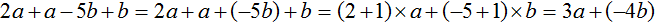
Получили выражение 3a + (−4b). В этом выражении раскроем скобки. Перед скобками стоит плюс, поэтому используем первое правило раскрытия скобок, то есть опускаем скобки вместе с плюсом, который стоит перед этими скобками:
\[3a + (-4b) = 3a - 4b\]
Таким образом, выражение 2a+a−5b+b упрощается до 3a−4b.
Раскрыв одни скобки, по пути могут встретиться другие. К ним применяем те же правила, что и к первым. Например, раскроем скобки в следующем выражении:
\[2 + (-3 + 1) + 3 + (-6)\]
Здесь два места, где нужно раскрыть скобки. В данном случае применимо первое правило раскрытия скобок, а именно опускание скобок вместе с плюсом, который стоит перед этими скобками:
\[2 + (-3 + 1) + 3 + (-6) = 2 - 3 + 1 + 3 - 6\]
Пример 3. Раскрыть скобки в выражении 6+(−3)+(−2)
В обоих местах, где имеются скобки, перед ними стоит плюс. Здесь опять же применяется первое правило раскрытия скобок:
\[6 + (-3) + (-2) = 6 - 3 - 2\]
Иногда первое слагаемое в скобках записано без знака. Например, в выражении 1+(2+3−4) первое слагаемое в скобках 2 записано без знака. Возникает вопрос, а какой знак будет стоять перед двойкой после того, как скобки и плюс, стоящий перед скобками опустятся? Ответ напрашивается сам — перед двойкой будет стоять плюс.
На самом деле даже будучи в скобках перед двойкой стоит плюс, но мы его не видим по причине того, что его не записывают. Мы уже говорили, что полная запись положительных чисел выглядит как +1, +2, +3. Но плюсы по традиции не записывают, поэтому мы и видим привычные для нас положительные числа 1, 2, 3.
Поэтому, чтобы раскрыть скобки в выражении 1+(2+3−4), нужно как обычно опустить скобки вместе с плюсом, стоящим перед этими скобками, но первое слагаемое которое было в скобках записать со знаком плюс:
\[1 + (2 + 3 - 4) = 1 + 2 + 3 - 4\]
Пример 4. Раскрыть скобки в выражении −5 + (2 − 3)
Перед скобками стоит плюс, поэтому применяем первое правило раскрытия скобок, а именно опускаем скобки вместе с плюсом, который стоит перед этими скобками. Но первое слагаемое, которое в скобках записываем со знаком плюс:
\[-5 + (2 - 3) = -5 + 2 - 3\]
Пример 5. Раскрыть скобки в выражении (−5)
Перед скобками стоит плюс, но он не записан по причине того, что до него не было других чисел или выражений. Наша задача убрать скобки, применив первое правило раскрытия скобок, а именно опустить скобки вместе с этим плюсом (даже если он невидим)
\[(-5) = -5\]
Пример 6. Раскрыть скобки в выражении 2a + (−6a + b)
Перед скобками стоит плюс, значит этот плюс опускается вместе со скобками. То, что было в скобках запишется без изменений:
\[2a + (-6a + b) = 2a -6a + b\]
Пример 7. Раскрыть скобки в выражении 5a + (−7b + 6c) + 3a + (−2d)
В данном выражении имеется два места, где нужно раскрыть скобки. В обоих участках перед скобками стоит плюс, значит этот плюс опускается вместе со скобками. То, что было в скобках запишется без изменений:
\[5a + (-7b + 6c) + 3a + (-2d) = 5a -7b + 6c + 3a - 2d\]
Второе правило раскрытия скобок
Теперь рассмотрим второе правило раскрытия скобок. Оно применяется тогда, когда перед скобками стоит минус.
Если перед скобками стоит минус, то этот минус опускается вместе со скобками, но слагаемые, которые были в скобках, меняют свой знак на противоположный.
Например, раскроем скобки в следующем выражении
\[5 - (-2 - 3)\]
Видим, что перед скобками стоит минус. Значит нужно применить второе правило раскрытия, а именно опустить скобки вместе с минусом, стоящим перед этими скобками. При этом слагаемые, которые были в скобках, поменяют свой знак на противоположный:
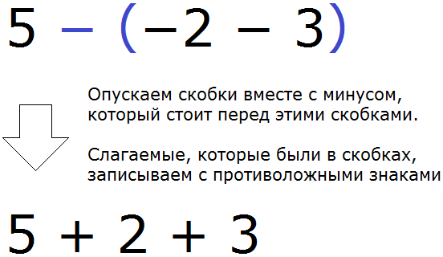
Мы получили выражение без скобок 5 + 2 + 3. Данное выражение равно 10, как и предыдущее выражение со скобками было равно 10.
\[5 - (-2 - 3) = 10\]
\[5 + 2 + 3 = 10\]
Таким образом, между выражениями 5−(−2−3) и 5+2+3 можно поставить знак равенства, поскольку они равны одному и тому же значению:
\[5 - (-2 - 3) = 5 + 2 + 3\]
\[10 = 10\]
Пример 2. Раскрыть скобки в выражении 6 − (−2 − 5)
Перед скобками стоит минус, поэтому применяем второе правило раскрытия скобок, а именно опускаем скобки вместе с минусом, который стоит перед этими скобками. При этом слагаемые, которые были в скобках, записываем с противоположными знаками:
\[6 - (-2 - 5) = 6 + 2 + 5\]
Пример 3. Раскрыть скобки в выражении 2 − (7 + 3)
Перед скобками стоит минус, поэтому применяем второе правило раскрытия скобок:
\[2 - (7 + 3) = 2 - 7 - 3\]
Пример 4. Раскрыть скобки в выражении −(−3 + 4)
Перед скобками стоит минус, поэтому применяем второе правило раскрытия скобок:
\[-(-3 + 4) = 3 - 4\]
Пример 5. Раскрыть скобки в выражении −(−8 − 2) + 16 + (−9 − 2)
Здесь два места, где нужно раскрыть скобки. В первом случае нужно применить второе правило раскрытия скобок, а когда очередь доходит до выражения +(−9 − 2) нужно применить первое правило:
\[-(-8 - 2) + 16 + (-9 - 2) = 8 + 2 + 16 - 9 - 2\]
Пример 6. Раскрыть скобки в выражении −(−a − 1)
Перед скобками стоит минус, поэтому применяем второе правило раскрытия скобок:
\[-(-a - 1) = a + 1\]
Пример 7. Раскрыть скобки в выражении −(4a + 3)
Перед скобками стоит минус, поэтому применяем второе правило раскрытия скобок:
\[-(4a + 3) = -4a - 3\]
Пример 8. Раскрыть скобки в выражении a − (4b + 3) + 15
Перед скобками стоит минус, поэтому применяем второе правило раскрытия скобок:
\[a - (4b + 3) + 15 = a - 4b - 3 + 15\]
Пример 9. Раскрыть скобки в выражении 2a + (3b − b) − (3c + 5)
Здесь два места, где нужно раскрыть скобки. В первом случае нужно применить первое правило раскрытия скобок, а когда очередь доходит до выражения −(3c+5) нужно применить второе правило:
\[2a + (3b - b) - (3c + 5) = 2a + 3b - b - 3c - 5\]
Пример 10. Раскрыть скобки в выражении −a − (−4a) + (−6b) − (−8c + 15)
Здесь три места, где нужно раскрыть скобки. Вначале нужно применить второе правило раскрытия скобок, затем первое, а затем опять второе:
\[-a - (-4a) + (-6b) - (-8c + 15) = -a + 4a - 6b + 8c - 15\]
Механизм раскрытия скобок
Правила раскрытия скобок, которые мы сейчас рассмотрели, основаны на распределительном законе умножения:
\[a(b + c) = ab + ac\]
На самом деле раскрытием скобок называют ту процедуру, когда общий множитель умножают на каждое слагаемое в скобках. В результате такого умножения скобки исчезают. Например, раскроем скобки в выражении 3×(4+5)
\[3 \times (4 + 5) = 3 \times 4 + 3 \times 5\]
Поэтому, если нужно умножить число на выражение в скобках (или выражение в скобках умножить на число) надо говорить раскроем скобки.
Но как связан распределительный закон умножения с правилами раскрытия скобок, которые мы рассматривали ранее?
Дело в том, что перед любыми скобками стоит общий множитель. В примере 3 × (4 + 5) общий множитель это 3. А в примере a(b + c) общий множитель это переменная a.
Если перед скобками нет чисел или переменных, то общим множителем является 1 или −1, в зависимости от того, какой знак стоит перед скобками. Если перед скобками стоит плюс, значит общим множителем является 1. Если перед скобками стоит минус, значит общим множителем является −1.
К примеру, раскроем скобки в выражении −(3b − 1). Перед скобками стоит минус, поэтому нужно воспользоваться вторым правилом раскрытия скобок, то есть опустить скобки вместе с минусом, стоящим перед скобками. А выражение, которое было в скобках, записать с противоположными знаками:
\[-(3b - 1) = -3b + 1\]
Мы раскрыли скобки, воспользовавшись правилом раскрытия скобок. Но эти же скобки можно раскрыть, воспользовавшись распределительным законом умножения. Для этого сначала записываем перед скобками общий множитель 1, который не был записан:
\[-1(3b -1)\]
Минус, который раньше стоял перед скобками относился к этой единице. Теперь можно раскрыть скобки, применяя распределительный закон умножения. Для этого общий множитель −1 нужно умножить на каждое слагаемое в скобках и полученные результаты сложить.
Для удобства заменим разность, находящуюся в скобках на сумму:
\[-1(3b -1) = -1( 3b + (-1) )\]
Далее умножаем общий множитель −1 на каждое слагаемое в скобках:
\[-1(3b -1) = -1(3b + (-1)) = -1 \times 3b + (-1) \times (-1) = -3b + 1\]
Как и в прошлый раз мы получили выражение −3b + 1. Каждый согласится с тем, что в этот раз затрачено больше времени на решение столь простейшего примера. Поэтому разумнее пользоваться готовыми правилами раскрытия скобок, которые мы рассматривали в данном уроке:
\[-(3b - 1) = -3b + 1\]
Но не мешает знать, как эти правила работают.
В данном уроке мы научились ещё одному тождественному преобразованию. Вместе с раскрытием скобок, вынесением общего за скобки и приведением подобных слагаемых можно немного расширить круг решаемых задач. Например:
Раскрыть скобки и привести подобные слагаемые в следующем выражении:
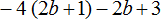
Здесь нужно выполнить два действия — сначала раскрыть скобки, а потом привести подобные слагаемые. Итак, по порядку:
1) Раскрываем скобки:
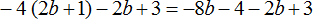
2) Приводим подобные слагаемые:
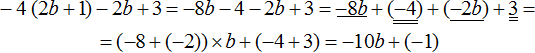
В получившемся выражении −10b+(−1) можно раскрыть скобки:
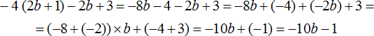
Пример 2. Раскрыть скобки и привести подобные слагаемые в следующем выражении:
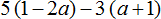
1) Раскроем скобки:
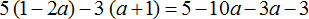
2) Приведем подобные слагаемые. В этот раз для экономии времени и места, не будем записывать, как коэффициенты умножаются на общую буквенную часть
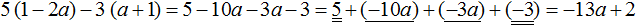
Пример 3. Упростить выражение 8m+3m и найти его значение при m=−4
1) Сначала упростим выражение. Чтобы упростить выражение 8m+3m, можно вынести в нём общий множитель m за скобки:
\[8m + 3m = m(8 + 3)\]
2) Находим значение выражения m(8 + 3) при m = −4. Для этого в выражение m(8 + 3) вместо переменной m подставляем число −4
\[m (8 + 3) = -4 (8 + 3) = -4 \times 8 + (-4) \times 3 = -32 + (-12) = -44\]
Задания для самостоятельного решения
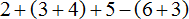
Показать решение
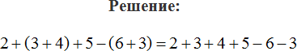
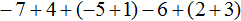
Показать решение
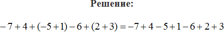
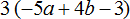
Показать решение
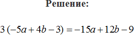
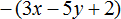
Показать решение
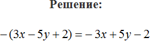
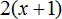
Показать решение
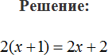
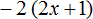
Показать решение
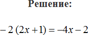
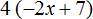
Показать решение
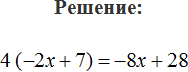
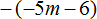
Показать решение
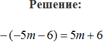
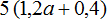
Показать решение
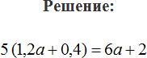
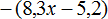
Показать решение
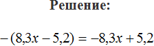
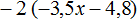
Показать решение
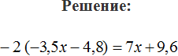
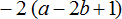
Показать решение
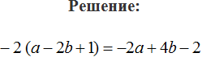
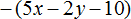
Показать решение
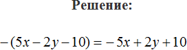
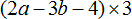
Показать решение
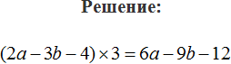
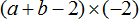
Показать решение
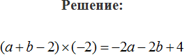
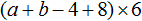
Показать решение
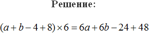
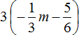
Показать решение
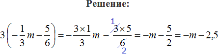
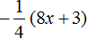
Показать решение
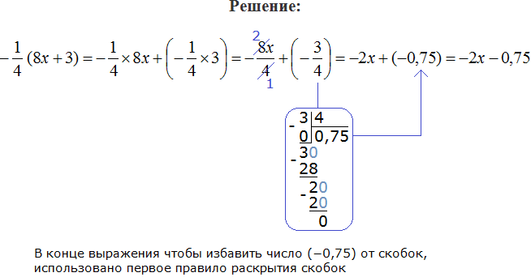
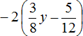
Показать решение
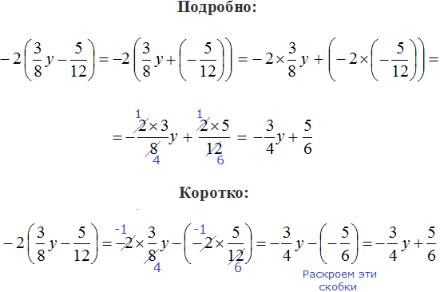
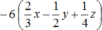
Показать решение
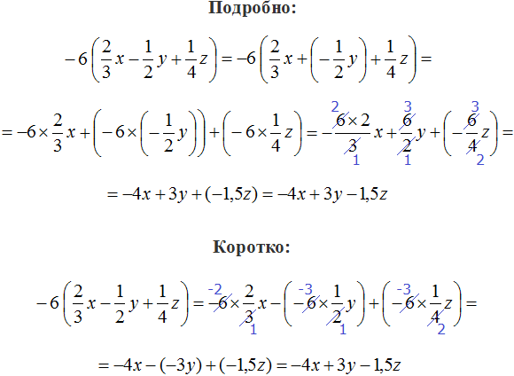
Показать решение
Показать решение
Показать решение
Возникло желание поддержать проект?
Используй кнопку ниже